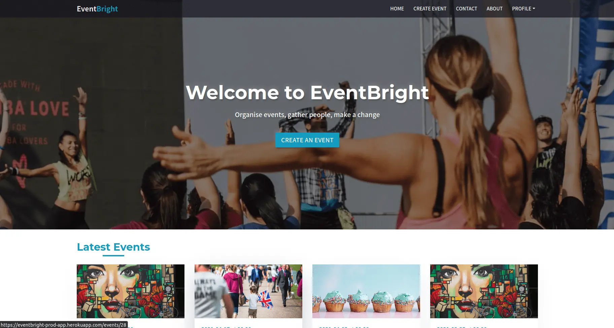

EventBright
A full stack Ruby on Rails CRUD app clone of EventBrite.
Hello, I'm Georges Atalla.
Ruby on Rails developer.
My main focus. I love algorithm & software design. RESTful & secure back-end with authentification and database validations
Responsive & animated layouts with performance optimization
Clean code, following style guides, naming conventions & pattern principles
I've learnt to google, read error messages & understand documentations
Github team workflow using feature branches & pull requests/code reviews. MVP & agile methodology for projects
My purposes at heart. My best coding experiences are the ones I have with other people. I strongly believe in team synergie
A full stack Ruby on Rails CRUD app clone of EventBrite.
Ruby on Rails team project after a 3 months bootcamp at The Hacking Project.
Tic Tac Toe game in vanilla JavaScript, OOP design, back & front from scratch.
Tic Tac Toe game with terminal UI in Ruby
A static webpage replica of Secretlab blog.
After being a user of the app, I had the opportunity to be part of the tech team for its development.
After the bootcamp I felt good in my abilities, I was able to pick up code concepts faster and look up informations more easly.
It was an exciting freedom feeling, so I decided to explore more in depth the fundamentals.
I've spent time on pure Ruby with the Ruby object model, I've completed the HTML/CSS and JavaScript tracks of The Odin Project.
I've also studied the fascinating book Metaprogramming Ruby 2: Program Like the Ruby Pros, from Paolo Perrotta, wich gave me a lot insights regarding the beauty behind Rails.
This learning period was crucial for me, it cleared many gaps in my knowledge, made me feel more legitimate as a developer, and overall, I realized that I am able to learn on my own.
I successfully completed a 3 months bootcamp at The Hacking Project. It significantly boosted my learning curve, and gave me my first opportunity to work on a large team project.
I graduated with a bachelor's degree in biology. The next four years I worked in a restaurant and traveled in Asia, South America & India. During my trips I met people working in the tech industry. I got hooked talking with them about their work. Today I'm happily pursuing a career as a developer.